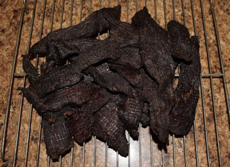

Mermaid Jerky
One of the most essential staples of a sailor's diet in the Great Lake. In any long journey out to sea, nutritious food takes up much precious space
and rots relatively quickly without buying or using technologies from other corporations like P corp. Fortunately though, the mermaids that are
killed on hunts for whale oil can be made into a cheap source of food. Don't think too much about their human origins though; those things can't be
called such anyways...
Ingredients
- Mermaid (of any kind)
- Salt
Instructions
- Prepare the mermaid meat by skinning and gutting the mermaid. The skin and guts can be saved to be sold for the use of mermaid perfumes or
other tourist trap items at any of the ports that can be found in the Great Lake.
- Slice the meat to a size fitting of the container you will be using for curing.
- Pack a tall, waterproof container with salt until the bottom is covered. Then place a slice of mermaid meat inside before covering with salt,
and alternate layers of salt and meat.
- Wait for at least half a day or at most a full day before extracting and consuming the mermaid jerky.
Not the best kind of food for you to munch on, but it was acceptable compared to the alternative foods we would have had to eat out at sea.
Return